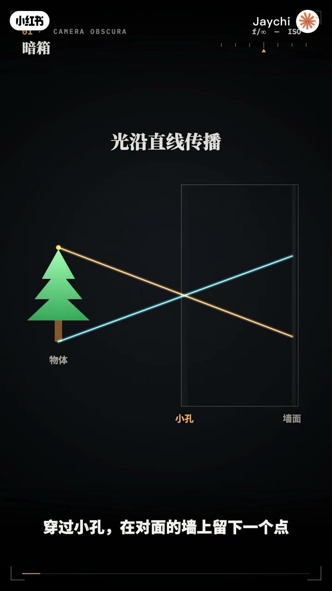
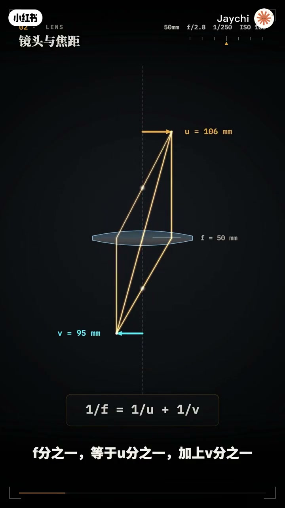
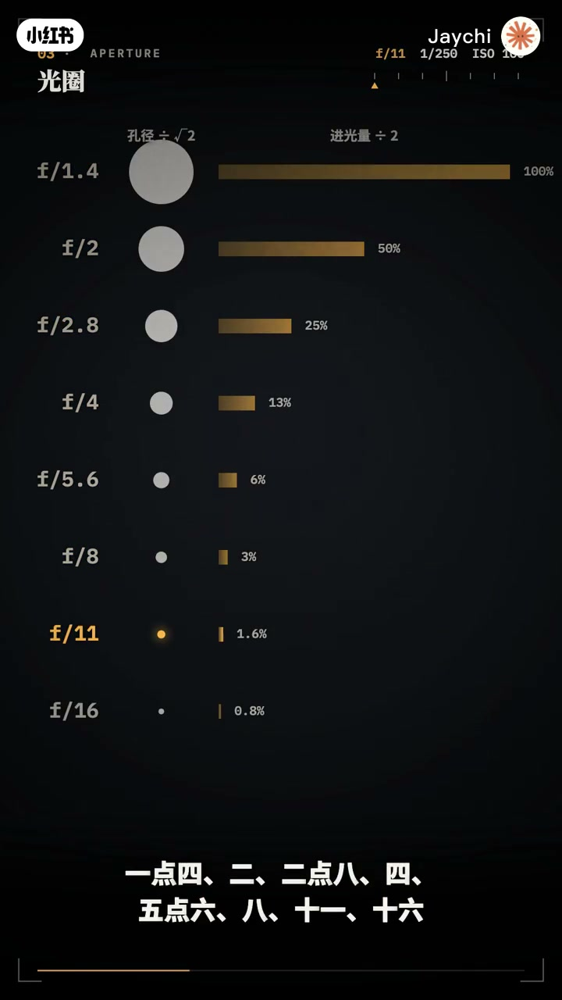
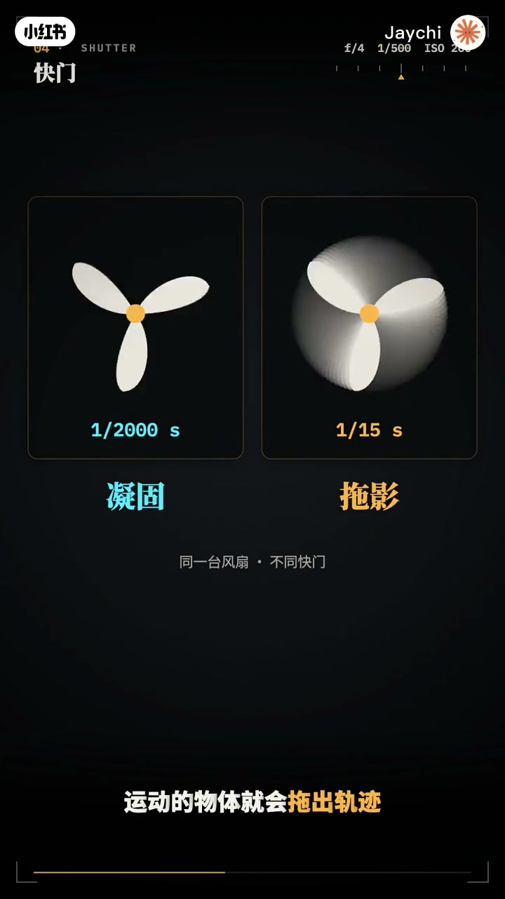
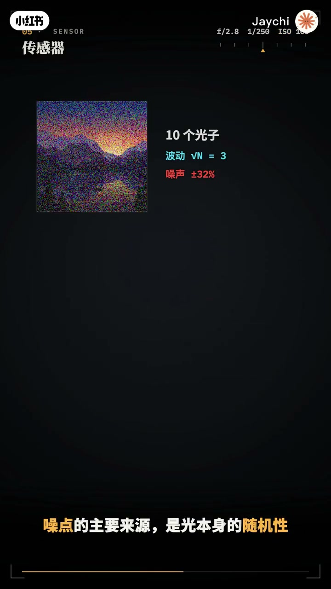
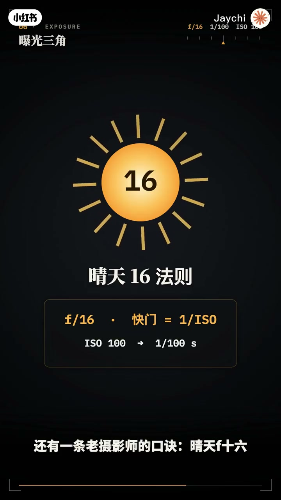
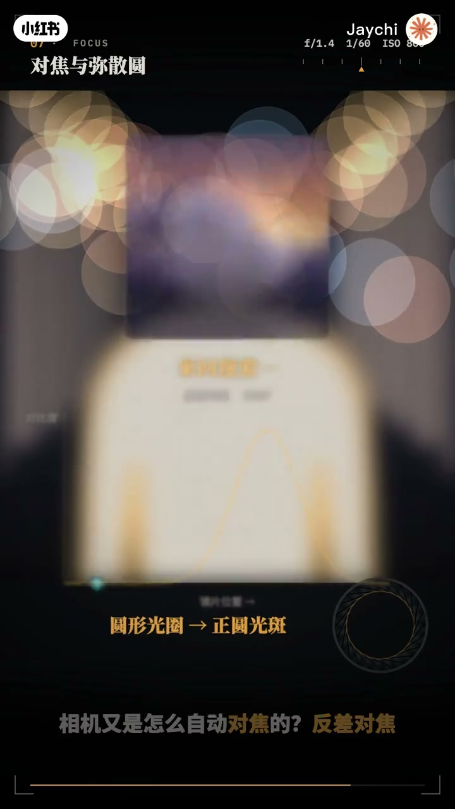
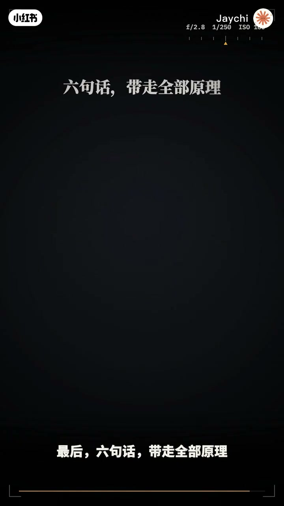

内容要点
「用最简单的动画让你看懂相机拍照原理」教程要点：按下快门的一瞬间 → 相机里究竟发生了什么 → 光穿过一片片玻璃 → 被一个小孔精确控制；详见正文。
知识结构
按下快门的一瞬间
8
1秒125
- 1.4
- 2.8
- 5.6
按下快门的一瞬间
00:00–01:49按下快门的一瞬间
按下快门的一瞬间；相机里究竟发生了什么；光穿过一片片玻璃；被一个小孔精确控制；在不到百分之一秒里；落在几千万个感光点上；这一集；把相机的原理；一次讲透；相机的祖先；是一个暗箱；光源直线传播；物体上每一个点发出的光；穿过小孔；在对面的墙上；留下一个点；上面的光落到下面；下面的光落到上面；于是；墙上出现了一幅倒立的影像；这就是小孔成像；但小孔有一个两难；孔越小；影像越清晰；却越暗；孔越大；越亮；却越模糊；想要又亮又清晰；就需要一样东西；把光重新汇聚起来；镜头；今天的相机；本质上仍是这个暗箱；镜头汇聚光线；光圈控制近光；快门控制时间；传感器负责记录；光从空气进入锅里；速度降到原来的三分之二；方向随之弯折；这就是折射；普透镜利用折射；把平行射入的光线；汇聚到一点；这个点叫焦点；镜头到焦点的距离；就是焦距；布局；相距和焦距之间；满足一个简洁的关系；F分之一等于U分之一；加上B分之一；焦距决定视角；在全画幅上；24毫米能看到84度；50毫米约47度；200毫米只剩12度；焦距越短；看得越广；焦距越长；看得越远；可是不同颜色的光；折射程度并不相同；会汇聚在不同的位置；形成色散和紫边；所以；一支真正的镜头里；往往有十几片镜片；用不同形状和材料；彼此抵消这些相差；镜头里的这组叶片；就是光圈；它像桶桶一样；控制近光口的大小；光圈用F指标是；焦距除以空光孔径；F2意味着孔径是焦距的一半；所以F值越小；光圈越大；每一档光圈相差等号2倍；1.4；2；2.8；4；5.6


01:46–03:438
8；11；16；孔径缩小；等号2倍；面积减半；近光量也减半；这就是一档；光圈不止决定亮度；还决定背景的虚化；大光圈 背景融化；小光圈 前后都清晰；但光圈也不是越小越好；孔径小时光会发生眼射；在F16；一个光点会扩散到20微米；比像素还大；画面反而变软；大多数镜头最锐利的位置；在F5.6到F8之间；快门；控制光落在传感器上的时间；大多数相机使用焦平面快门；前连落下；传感器开始曝光；后连追上 曝光结束；高速快门时；后连几乎紧跟前连；只留下一道窄缝扫过传感器；快门越快 越能凝固运动；快门越慢；运动的物体就会做出轨迹；拖影的长度；等于物体在画面上的速度；乘以曝光时间；电子快门没有连目；而是逐行读取传感器；读完一针需要时间；高速旋转的物体就会被扭曲；这就是果冻效应；传感器上排列着几千万个感光单元；也就是像素；每个像素都是一个光电二级管；光子打进来；激发出电子；被收集在像素里；光越多 电子越多；但像素本身是色盲的；所以；它上方盖着一层彩色滤镜；红绿蓝排成拜尔阵列；其中绿色占一半；因为人眼对绿色最敏感；每个像素只记录一种颜色；另外两种靠周围像素差值算出来；这叫去马赛克；那ISO呢；ISO并不会让传感器更敏感；它只是把已经收集到的信号放大；噪点的主要来源；是光本身的随机性；收集100个光子；波动大约10个；收集10000个；波动只有100；信号越多 画面越干净；这就是大底的优势；更大的传感器；能接触更多的光；全画幅36x24毫米；APS-C裁切1.5倍；M43裁切2倍；手机主摄；面积只有全画幅的十几分之一；光圈；快门；ISO；共同决定照片的亮度；这就是曝光三角；它们都以档为单位；光圈开大一档；快门就可以快一档；亮度不变；F2.8；1秒5%；和F5.6


03:41–05:401秒125
1秒125；曝光完全相同；但代价各不相同；光圈影响虚化；快门影响动感；ISO影响到点；拍照就是在三者之间取舍；还有一条老摄影师的口诀；晴天F16；快门等于ISO分之一；对焦就是移动晴天；让某个距离上的点；恰好会聚在传感器上；不在这个距离的点了；它的光追在传感器上；结出的不是一个点；而是一个圆；这个圆叫弥散圆；只要弥散圆足够小；人眼就会把它当成一个点；看起来依然清晰；在全画幅上；这个标准大约是0.03毫米；弥散圆小于这个标准的；前后范围就是景深；景深由三件事决定；光圈越大；焦距越长；离得越近；景深就越浅；把焦点放在超焦距上；从它的一半到无穷远；都会清晰；这是风光摄影的常用技巧；虚化光斑的形状；就是光圈的形状；七片叶片；光斑就是七边形；圆形光圈；光斑就是正圆；相机又是怎么自动对焦的；反差对焦；来回移动镜片；寻找对比度最高的位置；准确但会来回拉风箱；相位对焦；把镜头两侧的光分开比较；直接算出该往哪个方向；移动多少；又快又果断；很多人以为；长焦会压缩空间；其实；决定透视的只有一件事；你站在哪里；站得近；前景大；背景小；空间被拉伸；站得远；前后物体的大小差距变小；空间就被压缩；焦距只是在裁切画面；用广角拍完再裁剪；和长焦拍到的透视一模一样；如果一边后退；一边拉长焦距；让主体大小不变；背景就会诡异地向前涌来；这就是稀缺苛刻的滑动变焦；最后；六句话；带走全部原理；镜头汇聚光线；焦距决定视角；光圈控制近光；也控制景深；快门控制时间；决定凝固；还是拖影；传感器把光子变成电子；ISO只是放大；迷散源决定清晰；站位决定透视；理解了光；你就理解了相机




口述/画面要点（40段）
结合 Whisper medium 与画面大字整理；专有名词已校对。
按下快门的一瞬间
相机里究竟发生了什么
光穿过一片片玻璃
被一个小孔精确控制
在不到百分之一秒里
落在几千万个感光点上
这一集
把相机的原理
一次讲透
相机的祖先
是一个暗箱
光源直线传播
物体上每一个点发出的光
穿过小孔
在对面的墙上
留下一个点
上面的光落到下面
下面的光落到上面
于是
墙上出现了一幅倒立的影像
这就是小孔成像
但小孔有一个两难
孔越小
影像越清晰
却越暗
孔越大
越亮
却越模糊
想要又亮又清晰
就需要一样东西
把光重新汇聚起来
镜头
今天的相机
本质上仍是这个暗箱
镜头汇聚光线
光圈控制近光
快门控制时间
传感器负责记录
光从空气进入锅里
速度降到原来的三分之二